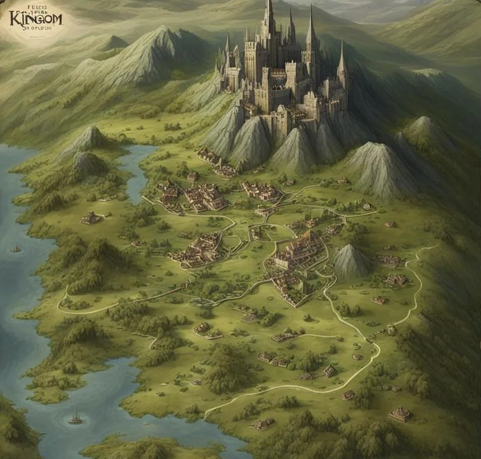
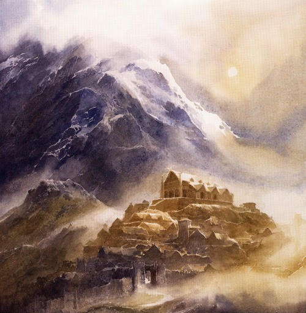

Lugares
Arnor
Arnor era um reino humano em Eriador. Foi fundada por Elendil e seu povo, que sobreviveu à queda de Númenor perto do final da Segunda Era. Os povos que viviam em Arnor eram descendentes descendantsdos sobreviventes do númenorano e dos povos humanos indígenas que viviam lá antes. A capital do Arnor era a cidade de Annúminas. Estava nas margens do Lago Evendim, no norte de Eriador. Elendil foi o primeiro rei de Arnor. Após sua morte, seu filho mais velho Isildur tornou-se rei. Após a morte de Erendur, o décimo rei, em T.A. 861, seus três filhos dividiram Arnor em três novas terras. Cada país countrygovernado por um dos filhos. Estes países eram: Arthedain no oeste, Cardolan no sul e Rhudaur no norte. Com o tempo, os três países foram destruídos em guerras contra Angmar. Após a Guerra do Anel, a terra novamente se tornou parte do Reino Recolhedo de Arnor e Gondor. É governado pelo rei Elessar Telcontar e seus descendentes.
Erebor
Erebor é uma montanha no nordeste de Rhovanion. Quando os anões tiveram que deixar sua antiga casa Khazad-dem, tornou-se a nova casa do povo de Durin. Eles foram liderados por Thráin I, que se tornou rei sob a montanha. Mais tarde, Erebor foi atacado pelo dragão Smaug, e os anões tiveram que fugir novamente. Na história contada em O Hobbit, o dragão Smaug é morto e os anões retornam novamente à Montanha Lonely. Dáin II Ironfoot torna-se novo Rei sob a Montanha.
Esgaroth
Esgaroth é uma cidade no nordeste de Rhovanion. Também é conhecido como Lake-town É construído no Lago Longo. a cidade fica ao sul da Montanha Soluza e a leste de Mirkwood. Foi destruído pelo dragão Smaug durante os eventos de O Hobbit, mas foi reconstruído.
Fangorn
Fangorn ou Fangorn Forest é uma grande floresta no lado oriental do extremo sul das Montanhas Misty. Fangorn é a casa dos Ents. Eles são um povo de seres gigantes semelhantes a árvores. A palavra Sindarin "Fangorn" se traduz em "Beardtree", Fangoen também é o nome Sindarin do Ent Treebeard.
Minas Tirith

Minas Tirith, a "Torre da Guarda", é uma das mais grandiosas e importantes cidades do reino de Gondor. Erguida nas encostas das Montanhas Brancas, foi inicialmente chamada de Minas Anor, em homenagem ao sol, e construída como um baluarte contra as ameaças vindas do leste. Com o passar do tempo, tornou-se a capital de Gondor após a queda de Minas Ithil, tomada pelas forças de Sauron e transformada em Minas Morgul. Minas Tirith é conhecida por suas muralhas brancas e imponentes, erguidas em vários níveis, e sua cidadela no topo, onde se localiza o trono dos reis e senescais de Gondor. Durante a Guerra do Anel, a cidade se tornou o foco de um ataque maciço das forças de Mordor, que buscavam destruir a última grande fortaleza dos Homens. Contudo, com a bravura de seus defensores e o auxílio dos Rohirrim e de Aragorn, Minas Tirith resistiu ao cerco, culminando na vitória na Batalha dos Campos de Pelennor e na restauração da glória de Gondor.
Abismo de Helm

O Abismo de Helm é um vale profundo no lado norte da parte ocidental das Montanhas Brancas. Vai do sul até a Fenda de Rohan. O vale foi bloqueado por uma série de colinas chamadas de Muralha de Helm. O Abismo de Helm é a localização da fortaleza, o Forte da Trombeta. A entrada para as Cavernas Cintilantes está no final do vale.
Isegard
Isengard é uma fortaleza no extremo sul das Montanhas Esquidas. Está em um pequeno vale dentro de uma parede em forma de anel. O muro é chamado, o Anel de Isengard. Na fortaleza há uma torre negra alta, Orthanc. Isengard pertencia a Gondor, mas no século 28 foi dado a Saruman. A fortaleza tem um palantír. Um palantir é uma bola feita de cristal indestrutível que é usado para se comunicar com outros lugares. Na Guerra do Anel, a parede circular foi destruída pelos Ents. Após a guerra, a torre Orthanc foi detida ao Rei Elessar e ao Reino Reunido.
Lothlórien

Lothlórien era um reino élfico. Fica entre as Montanhas Esquecidas e o Anduin. O reino estava situado na terra entre os rios Anduin e Celebrian. Estava próximo do reino dos anões Khazad-dûm. Lothlórien foi fundada na Segunda Era. Amdír foi o primeiro rei de Lothlórien. Os elfos de Lothlórien lutaram na Guerra da Última Aliança de Elfos e Homens contra Sauron. Na guerra, Amdír foi morto. Seu filho Amroth foi rei depois dele. Mais tarde, Amroth deixou Lothlórien. Após sua partida, o reino foi governado por Lorde Celeborn e Senhora Galadriel até o final da Terceira Era. Caras Galadhon era a principal cidade de Lothlórien. Outros nomes de Lothlórien incluem o nome abreviado Lórien e os nomes Laurelindórenan, Dwimordene (rohirrim), ou a Floresta Dourada.
Mordor
Mordor é uma terra na parte sudeste da Terra-média. É a leste do Anduin. Mordor era a terra de Sauron na Segunda e Terceira Eras. Mordor é cercado por cordilheiras. O Ered Lithui (Sindarin: "Montanhas de Cinza") é uma cadeia de montanhas ao norte de Mordor. O Ephel Dúath (Sindarin: Montanhas da Sombra) é a oeste, Outra cordilheira do sul. No noroeste está o planalto chamado Gorgoroth. A principal fortaleza de Sauron, Barad-dér, fica na base das montanhas Ered Lithui. O vulcão Monte Doom fica a sudoeste de Barad-d'r. Muitas partes de Mordor são um terreno baldio. A parte sul de Mordor, ao redor do Mar de Núrnen, era mais fértil. Foi usado como terras agrícolas para alimentar os exércitos de Sauron.
Trevamata
Trevamata é uma grande floresta em Rhovanion. A floresta era originalmente conhecida como Verdejar, o Grande. Na Segunda Era, um povo élfico se estabeleceu no Verdejar. Eles criaram o reino de Bosque. A capital do reino estava na colina Amon Lanc. Após a Segunda Era, os Elfos foram viver mais ao norte. No século XI, Sauron escolheu viver na fortaleza de Dol Guldur em Amon Lanc. Estava no sul da floresta. Sua influência maligna escureceu a floresta, tendo menos efeito em direção ao norte. Depois disso, o Verdejar passou a ser conhecido como Trevamata. Após a Guerra do Anel, os efeitos malignos da influência de Sauron foram removidos da floresta. É conhecido como Eryn Lasgalen.
Valfenda
Valfenda foi uma cidade élfica no leste de Eriador. Foi fundada na Segunda Era por Elrond, um dos mais nobres elfos da Terra Média e portador de um dos Três Anéis dos Elfos. Ele governou até o final da Terceira Era, tornando Valfenda um importante refúgio para aqueles que buscavam proteção contra as forças do mal. A cidade era famosa por sua beleza natural e por suas magníficas construções, harmoniosamente integradas à paisagem montanhosa ao redor.
Rohan
Rohan ou a Marca Estelar (ou A Marca) era um reino humano no sudeste da Terra-média. Estava ao norte de Gondor. Rohan estava ao norte das Montanhas Brancas, a sudeste de Isengard e a sudoeste do Emyn Muil. Começou como parte de Gondor chamado Calenardhon. A capital de Rohan é Edoras. O salão do rei, Meduseld, fica em Edoras.
O Condado
O Condado é uma terra em Eriador. É habitado por hobbits. Seu nome em Westron era Shire ou Sozat (O Condado). Seu nome em Sindarin era Drann. O Condado foi colonizado pelos hobbits no século 24 da Terceira Era. É dividido em quatro Farthings: o Norte, o Oeste, o Sul e o Eastfarthing. Os líderes do Condado foram o Prefeito de Michel Delving, o Tuck de Tuckborough e o Mestre de Buckland.
Cenas Icônicas
Festa de aniversário de cento e onze anos de Bilbo

“Eu não conheço metade de vocês tão bem quanto gostaria; e gosto de menos da metade de vocês, metade, bem como vocês merecem...”
Além da grande exibição de fogos de artifício iniciada acidentalmente por Merry e Pippin, há uma coisa que torna este momento inesquecível: o discurso de Bilbo, no qual ele aproveita a oportunidade para criticar os Baggins, Boffins, Tooks, Brandybucks, Grubbs, Chubs, Burrowses, Hornblowers, Bolgers, Bracegirdles, Goodbodies, Brockhouses e Prouds
Por que esse momento é tão incrível? Pela primeira vez desde O Hobbit, vemos o Anel em ação. Bilbo coloca para desaparecer no ar como uma brincadeira – o que acaba configurando a história de Frodo em movimento, como ele recebe o Anel quando Bilbo sai.
Ataque no Topo do Vento

Ele fechou os olhos e lutou por um tempo; mas a resistência tornou-se insuportável, e finalmente ele lentamente tirou a corrente e escorregou o Anel no dedo indicador de sua mão esquerda. Acampados no Topo do Vento, os hobbits encontram-se emboscados pelos Nazgûl. Aragorn os afasta enquanto Frodo, pela primeira vez, usa o Anel e vê os Espectros do Anel em sua forma completa e horrível.
Por que esse momento é tão incrível? Esta passagem emocionante estabelece não só o perigo que os hobbits enfrentarão na jornada à frente, mas também o poder escuro e sedutor do Um Anel."
O Conselho de Elrond

“Eu vou pegar o Anel”, disse ele, “embora eu não saiba o caminho”.
Até este ponto, tudo o que aprendemos é que o Anel é mau e que algum Senhor das Trevas o deseja. Felizmente, nossos heróis chegam ao Concílio de Elrond, Senhor dos Elfos de Valfenda, que aproveita a oportunidade para fornecer muita exposição.
Por que esse momento é tão incrível? Elrond e Gandalf finalmente explicam toda a história (e o futuro potencialmente perigoso) do Anel. E, deste concílio, um bruxo, um anão, um elfo, dois homens e quatro hobbits formam a Irmandade titular que levará o Anel à Montanha da Perdição.
As Minas de Moria (sepultura de Balin e o Balrog)
“Você não pode passar!”
Impulsionada pelo mau tempo (cortesia de Saruman) e as forças iminentes de Sauron, a Irmandade é forçada a tomar um caminho sob as Montanhas Estranhas. Cortando as Minas de Moria, um antigo reino anão, a Irmandade é atacada por Orcs. Eles evitam por pouco a morte, apenas para encontrar o ardente Balrog. Enquanto a maior parte da Irmandade é capaz de escapar, Gandalf e o Balrog caem no abismo, deixando o resto para se defender sozinhos.
Durante seu tempo em Moria, a Irmandade percebe que Gollum está seguindo-os, ciente da posse de Frodo do Anel. Este é um fato pequeno, mas importante, porque, como Gandalf disse: 'Mesmo Gollum pode ter algo ainda a fazer.
Por que esse momento é tão incrível? A Irmandade luta como uma única unidade pela primeira vez no túmulo de Balin, mas sua vitória é de curta duração, já que a queda de Gandalf marca o início de sua dissolução. Este momento também apresenta Gollum ao enredo principal.
Merry e Pippin encontram Barbárvore
“Eu sou uma Ent, ou é assim que eles me chamam. Sim, Ent é a palavra. O Ent, eu sou, você pode dizer, em sua maneira de falar. Fangorn é o meu nome de acordo com alguns, Barba Serela, outros fazem. Barba da árvore vai fazer isso.”
Depois de serem levados por Orcs, Merry e Pippin conseguem escapar de serem mortos indo fundo na Floresta Fangorn. Lá, eles encontram o Barbárvore, o mais velho dos Ents deixados na Terra-média, e fazem uma amizade que mudará seus destinos e ajudará a transformar o equilíbrio a seu favor durante a Guerra do Anel.
Por que esse momento é tão incrível? Seus encontros com as formigas são cruciais para o desenvolvimento do personagem de Merry e Pippin. Até este ponto, eles têm sido um par malicioso de rascais, mas a partir daqui eles mostram-se como membros cruciais da Irmandade, ajudando a tirar os orcs do Condado. Além disso, ambos acabam bebendo cortinas Ent-de-final (água misteriosa fluindo para a Floresta) que os transformam nos hobbits mais altos da Terra-média já viu.
Retorno de Gandalf nas Floretas de Fangorn
"Sim, eu sou branco agora", disse Gandalf. “De fato, eu sou Saruman, quase pode-se dizer, Saruman como deveria ter sido.”
Pensaste que Gandalf morreu a lutar contra o Balrog nas Minas de Moria? Enquanto rastreiam Merry e Pippin na Floresta Fangorn, Aragorn, Legolas e Gimli se deparam com uma misteriosa figura vestida de branco. Eles o reconhecem como ninguém menos que Gandalf, que voltou para ajudar a Irmandade em seu tempo de necessidade.
Por que esse momento é tão incrível? É o retorno de Gandalf. Ele voltou mais forte, com uma mudança de nome – não mais Gandalf, o Cinzento, mas Gandalf, o Branco – e a capacidade de superar a magia de Saruman. Em suma, Gandalf foi e subiu de nível.
Gandalf liberta Théoden de Saruman
“O escuro tem sido meus sonhos ultimamente”, disse ele, “mas eu me sinto como um novo despertado”.
Não há mágica no Senhor dos Anéis. Embora muito usado ao longo da história, não são as luzes brilhantes e encantamentos variedade de magia; é mais sutil e subjugada. Mas isso não significa que não haja momentos mágicos. Um grande momento é quando o bruxo recém-branco liberta Théoden, rei de Rohan, do feitiço de Saruman. Depois de anos sendo controlado por língua verme, seu conselheiro venenoso e um dos aliados de Saruman, a magia de Gandalf rompe os laços e ajuda Théoden a se restabelecer como o rei e o protetor de seu povo.
Por que esse momento é tão incrível? Vemos a magia recém-descoberta de Gandalf saltar para a frente e quebrar Théoden do feitiço que o mantém cativo. Este momento também serve como uma metáfora, mostrando que a guerra não é apenas física, mas também uma batalha sobre corações e mentes. Finalmente, ele atua como o catalisador para uma batalha épica, o que nos leva ao nosso próximo grande momento da série...
A Batalha do Abismo de Helm

Flechas grossas quando a chuva veio assobiar sobre as ameias, e caiu piscando e olhando para as pedras. Alguns encontraram uma marca. O ataque ao Deep de Helm tinha começado, mas nenhum som ou desafio foi ouvido dentro; nenhuma flecha de resposta veio.
Nesta batalha épica, os Orcs de Saruman atacam impiedosamente a fortaleza do Abstrato de Helm, efetivamente quebrando suas paredes e quase matando o restante da Irmandade. Eles são eventualmente expulsos pelos esforços conjuntos do pequeno exército do rei Théoden, a Irmandade e reforços trazidos por Gandalf.
Por que esse momento é tão incrível? A Batalha das Profundezas de Helm é a primeira batalha da Guerra do Anel, e um gostinho do que está por vir. É o culminar do arco da história de Rohan, onde o vínculo entre Gimli e Legolas é solidificado - uma aliança improvável entre Elfos e Anões.
Sam resgata Frodo de Laracna
Nenhum ataque mais feroz jamais foi visto no mundo selvagem dos animais, onde alguma pequena criatura desesperada armada com pequenos dentes, sozinha, brotará sobre uma torre de chifres e esconderá que está acima de seu companheiro caído.
Se você tem um pouco de aracnofobia, esta parte dos livros vai ficar com você para sempre. Liderado na caverna de Laracna por Gollum, Samwise, o menos aventureiro dos hobbits, revela o quão feroz e leal ele é quando ele resgata Frodo das presas da aranha gigante.
Por que esse momento é tão incrível? A lealdade de Sam a Frodo tem sido uma constante desde que a jornada começou, mas nesta cena, ele prova o quão longe ele vai para salvar seu amigo. Isto é também quando as verdadeiras cores de Gollum vêm à luz: sua traição é revelada quando ele leva os hobbits para a caverna de Laracna (e em morte quase certa).
A destruição do Anel na Montanha da Perdição
"Eu vim", disse ele. Mas eu não escolho agora fazer o que vim fazer. Não vou fazer esta coisa. O Anel é meu!”
Depois de tudo o que os dois passaram, Frodo e Sam finalmente chegam na Montanha da Perdição. No último momento, Frodo se recusa a destruir o Anel – seu poder que tudo consome se prova muito para ele. Felizmente, Gollum resolve esse problema mordendo o dedo de Frodo, junto com o anel, e caindo nas profundezas junto com “seu precioso”. Um destino poético: o mais obcecado e afetado pelo poder do Anel encontra seu fim junto com ele.
Por que esse momento é tão incrível? É a conclusão da árdua jornada de Sam e Frodo e a Guerra do Anel. Saruman, Sauron e o Anel foram destruídos; tudo o que resta é eliminar os retardatários que os aguardam no Condado. Além disso, Gollum encontra seu destino há muito esperado enquanto também (sem saber) salvando o dia.
Criaturas
Valar

Os Valar são seres poderosos no universo de J.R.R. Tolkien, descritos principalmente no livro O Silmarillion. Eles são os "Poderes do Mundo", equivalentes a deuses ou arcanjos na mitologia tolkieniana, criados por Eru Ilúvatar, o deus supremo, e participaram na formação e no governo de Arda, o mundo no qual se passam as histórias de Tolkien. Entre os principais Valar estão Manwë, o Rei dos Valar e Senhor dos Ventos; Varda, sua esposa, Senhora das Estrelas; Ulmo, Senhor das Águas; Aulë, o Ferreiro e Criador dos Anões; Yavanna, Senhora da Natureza; Oromë, o Caçador e guerreiro; Námo (Mandos), Senhor dos Mortos; Vairë, esposa de Námo e Tecelã do destino; Nienna, Valar da compaixão; Tulkas, Valar da Força e Guerra; Estë, a curadora; e Irmo (Lórien), Valar dos Sonhos e Visões. Cada um representa uma força fundamental do mundo, moldando o destino de Arda nas primeiras eras da Terra Média. Melkor, também um Valar original, rebelou-se contra os outros e contra a vontade de Ilúvatar, tornando-se o primeiro Senhor do Escuro, conhecido como Morgoth, o grande vilão das eras antigas de Arda.
Elfos
Primeiros filhos de Ilúvatar, os elfos são considerados sábios e belos. São imunes a doenças e às mudanças ou desgaste da idade (após atingirem sua melhor idade, já com aparência adulta). Após Morgoth roubar as Silmarils, os Ainur enviaram os elfos para a Terra Média, onde passaram a ajudar na batalha contra o inimigo e, posteriormente, na reconstrução dos reinos.
Homens
Segundos filhos de Ilúvatar, os homens foram criados por Eru depois dos de o criador dar vida aos elfos e depois de o anões serem criados pelo Valar Aulë. Seres mortais e com relações de confiança que variam bastante com outras raças. Por ser uma raça com indivíduos que também desejam poder, os homens foram vistos como um fardo por alguns elfos. Além disso, alguns deles se uniram a Morgoth. Isso fez causou uma relação de desconfiança e preconceito entre humanos e outras raças, mas é algo que varia bastante, uma vez que cada humano tem uma índole e princípios diferentes.
Anãos
Os anãos foram criados pelo Valar Aulë sem a autorização de Ilúvatar. Ele criou os sete Pais dos Anões em segredo, abaixo das montanhas. Embora Ilúvatar tenha o repreendido, o criador acaba adotando os Anões como seus filhos e permite sua existência. Até hoje, os anões vivem em cidades subterrâneas, onde vivem da mineração e de outras atividades que desenvolveram a partir dela.
Hobbits
A origem dos Hobbits ou mesmo o responsável por sua criação são desconhecidos. Originalmente, eles eram um povo nômade e que buscava se esconder das "Pessoas Grandes". Os Hobbits são uma raça de seres sencientes, com aparência bem similar a dos humanos, diferenciando-se por seu pequeno tamanho e por seus pés peludos. Na série Os Anéis do Poder, conhecemos os ancestrais dos Hobbits, conhecidos apenas como Pés-Peludos.
Ents
Embora com uma grande semelhança física com árvores, os Ents são criaturas inteligentes que protegem as árvores e florestas de orcs e outros perigos. Foram criador pela Valar Yavanna, esposa de Aulë.
Grandes Águias
Essas enormes águias foram enviadas a Arda pelo líder dos Valar, Manwë, para proteger a Terra Média de inimigos como Noldor, Morgoth e Sauron.
Demônios (Umaiar)
Demônios são essencialmente espíritos que se voltaram para o lado das trevas. Contudo, a grande maioria dos demônios eram originalmente um dos Maiar, como Sauron. A única exceção foi Morgoth, que era um Valar antes de se tornar um demônio, ou Umaiar.
Dragões

Criaturas poderosas e inteligentes, foram criados por Morgoth durante a Primeira Era para serem usados como armas de guerra. Após a derrota de Morgoth, os dragões que sobreviveram eventualmente deram continuidade à espécie. Durante a Segunda e a Terceira Era, alguns dragões invadiram reinos de Anões e outros povos em busca de tesouros.
Orcs
Criaturas monstruosas e selvagens criadas por Morgoth. Embora sejam bárbaros e animalescos, possuem tecnologia, armas e inteligência.
Aranhas
Essas gigantes aranhas são conhecidas também como "Filhas do Ungoliant". Ungoliant foi a primeira aranha gigante de Arda e aliada de Morgoth. Vivem em lugares escuros e perigosos da Terra Média e são seres racionais.
Trolls
Mais uma dos seres monstruosos criados por Morgoth na Primeira Era, os trolls tinham forma humanóide, mas eram gigantes e com feições disformes. São extremamente fortes, mas a luz do Sol faz com que se tornem pedra. Eram, em geral, criaturas de pouca inteligência. Contudo, alguns trolls seguiram lutando ao lado de Sauron após a derrota de Morgoth, e ele criou os Olog-hai, uma raça de trolls mais inteligentes e resistentes ao Sol.